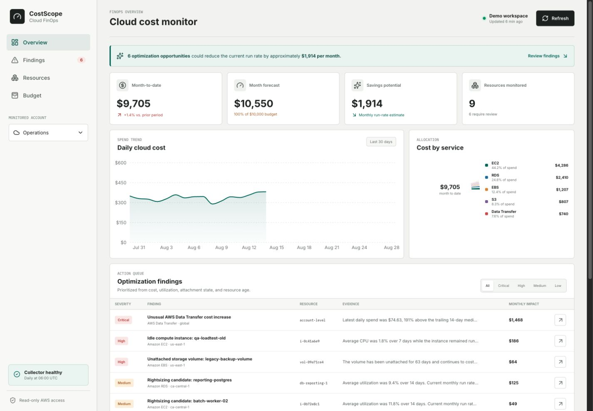

Project 02 | Cloud FinOps
Cloud FinOps Monitoring Platform
A completed, read-only cloud operations platform that converts AWS billing and utilization data into cost trends, budget forecasts, resource inventory, explainable waste findings, and prioritized follow-up actions.
- Role
- Architecture, backend, UI, infrastructure
- Coverage
- Costs, compute, storage, databases
- Status
- Complete public demo
Operations dashboard
One queue for cost and resource decisions
The public workspace uses deterministic sample telemetry so every workflow remains testable without exposing an AWS account.

Problem
Cloud waste hides in ordinary infrastructure
Forgotten instances, unattached volumes, oversized databases, stale snapshots, and gradual service spikes can remain invisible until the monthly invoice arrives.
CostScope joins billing history with infrastructure state and CloudWatch utilization, then turns each exception into evidence, estimated monthly impact, severity, ownership context, and a recommended next step.
End-to-end monitoring workflow
One response contract supports both the public demo and an authorized AWS account.
Collect
Query Cost Explorer, EC2, EBS, RDS, and CloudWatch through read-only IAM permissions.
Persist
Store normalized costs, resource snapshots, and finding history in SQLite or PostgreSQL.
Detect
Apply explainable thresholds for idle compute, rightsizing, unattached storage, retention, and spend spikes.
Act
Prioritize findings, estimate savings, monitor budgets, and publish urgent alerts through SNS.
Engineering
Built for repeatable operation
- FastAPI and typed Pydantic contracts
- React and TypeScript operations interface
- Docker Compose local environment
- Terraform for ECS, EventBridge, PostgreSQL, IAM, and SNS
- GitHub Actions for tests and builds
- SQL analytics with CTEs and window functions
Cost and security boundary
The demo is public. The account is not.
The portfolio deployment uses generated telemetry and has no cloud credentials. The live collector and paid infrastructure are complete, feature-flagged deployment options that remain unprovisioned by default to prevent recurring charges.
The application is intentionally read-only. It recommends actions but never stops, resizes, or deletes resources.
Explore the implementation